Introduction
Matplotlib is Python's fundamental plotting library, used across scientific computing, data analysis, and machine learning. This workbook covers the essential patterns you'll use daily: creating basic plots, customizing appearance, visualizing statistical data, and composing multi-panel figures.
Unlike publication-quality plotting (which focuses on fonts, colors, and polish), this workbook teaches the core API and patterns. Master these fundamentals, and you'll be able to quickly visualize data, debug models, and explore datasets.
Why This Matters
Quick, effective visualization is essential for understanding data and debugging models. Matplotlib provides the building blocks for all Python plotting.
Exercises
Create a scatter plot from x-y data with custom marker sizes and colors.
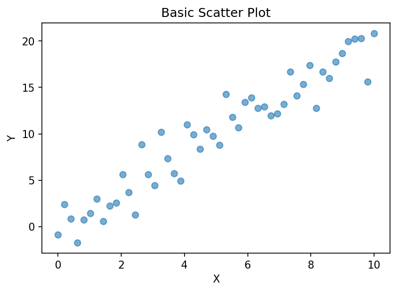
Expected output: scatter plot with labeled axes
What you'll implement:
- Plot displays all data points as circles
- X and Y axes have proper labels
- Figure is returned as Figure object
Hints:
- Use plt.scatter() with x and y arrays
- Use plt.xlabel() and plt.ylabel() for axis labels
Practice this in the TUI: Library → All Katas → "matplotlib_scatter"
def create_scatter_plot(
x: np.ndarray,
y: np.ndarray,
xlabel: str = "X",
ylabel: str = "Y"
) -> plt.Figure:
# BLANK_START
raise NotImplementedError
# BLANK_END
Plot multiple lines on the same axes with different line styles.
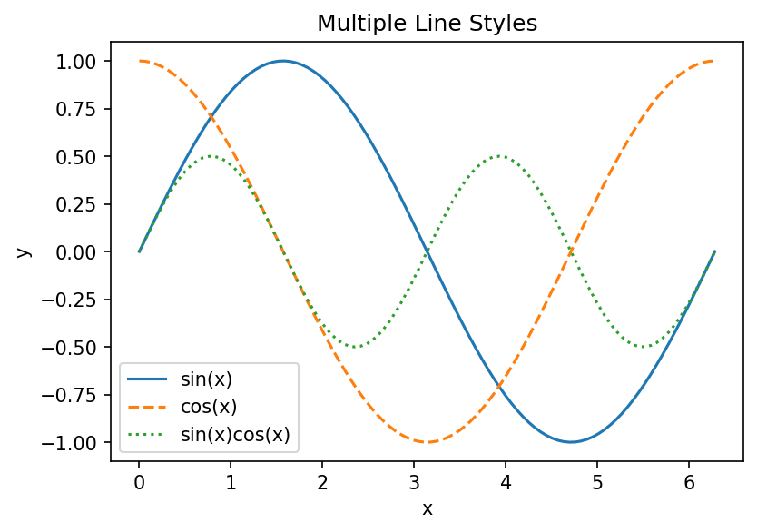
Expected output: multiple lines with different styles and legend
What you'll implement:
- All lines are displayed on the same axes
- Each line has a distinct style (solid, dashed, dotted)
- Legend identifies each series
Hints:
- Use plt.plot() multiple times for multiple lines
- Use the linestyle parameter: '-', '--', ':', '-.'
depends on: scatter
Practice this in the TUI: Library → All Katas → "matplotlib_line"
Create a vertical bar chart for categorical data.
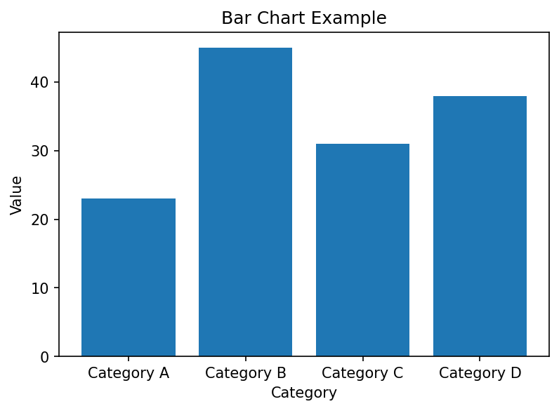
Expected output: bar chart with category labels
What you'll implement:
- Bars are properly positioned on the x-axis
- X-axis tick labels match category names
- Y-axis shows values with proper label
Hints:
- Use plt.bar() with categories and values
- Set x-tick labels with plt.xticks() if needed
depends on: scatter
Practice this in the TUI: Library → All Katas → "matplotlib_bar"
Plot a histogram showing distribution of data with customizable bins.
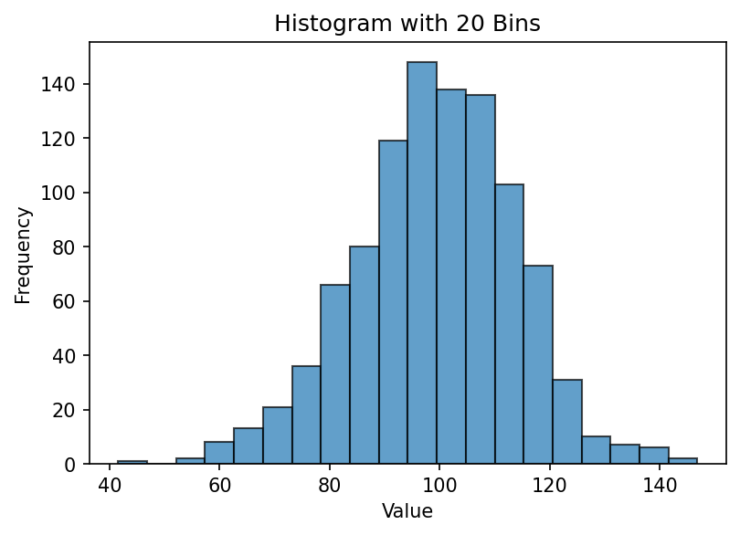
Expected output: histogram with semi-transparent bars
What you'll implement:
- Histogram displays frequency distribution correctly
- Number of bins is configurable
- Bars use semi-transparent fill (alpha less than 1)
Hints:
- Use plt.hist() with bins parameter
- Use alpha parameter for transparency (e.g., alpha=0.7)
depends on: bar
Practice this in the TUI: Library → All Katas → "matplotlib_histogram"
Add comprehensive labeling to a plot: title, axis labels, and legend.
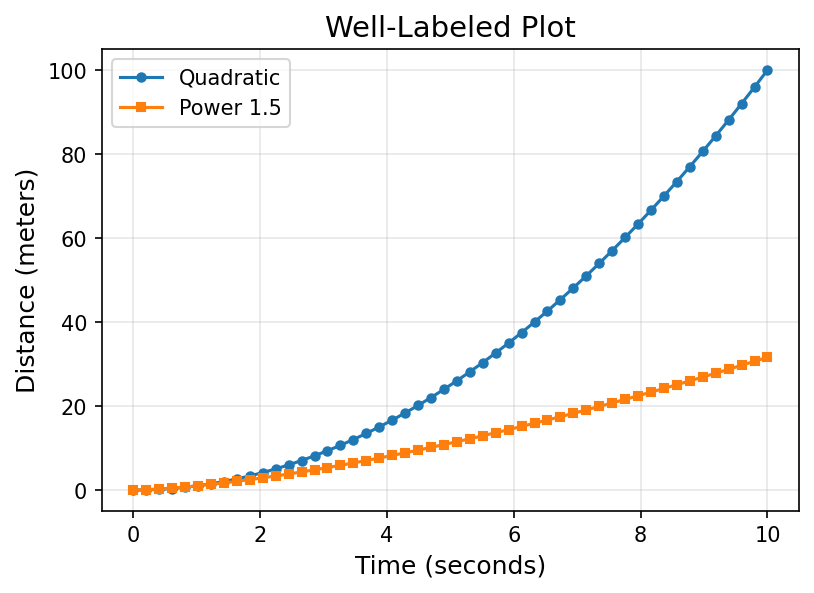
Expected output: plot with title, axis labels, and legend
What you'll implement:
- Plot has a descriptive title
- Both axes have clear labels with units if applicable
- Legend is present and correctly positioned
Hints:
- Use plt.title() for the plot title
- Pass label='...' to plot functions, then call plt.legend()
depends on: line
Practice this in the TUI: Library → All Katas → "matplotlib_labels_titles"
Customize plot appearance with colors, marker styles, and sizes.
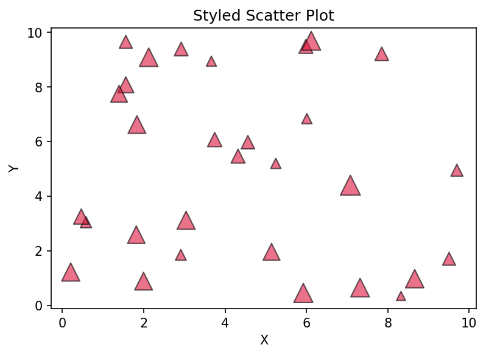
Expected output: scatter plot with custom markers and colors
What you'll implement:
- Scatter points use custom marker shapes (not default circles)
- Colors are specified explicitly (not default blue)
- Marker sizes vary based on data or are customized
Hints:
- Use marker parameter: 'o', 's', '^', 'D', etc.
- Use color parameter with names ('red') or hex codes
depends on: scatter, labels-titles
Practice this in the TUI: Library → All Katas → "matplotlib_colors_markers"
Display data with uncertainty using error bars.
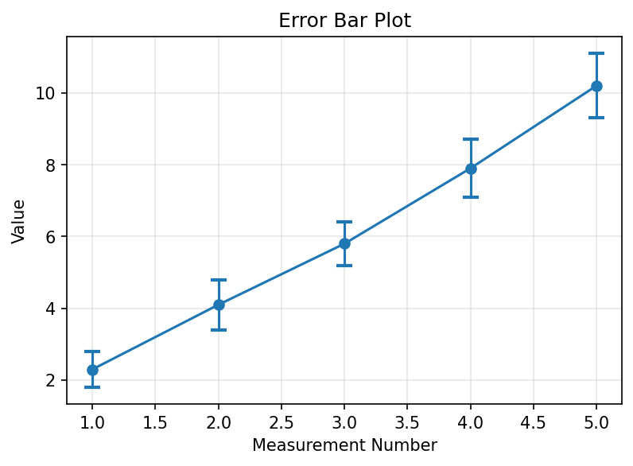
Expected output: plot with error bars showing uncertainty
What you'll implement:
- Error bars are visible on all data points
- Both x and/or y error bars can be shown
- Error magnitude is customizable
Hints:
- Use plt.errorbar() instead of plt.plot()
- Pass yerr parameter for y-axis error bars
depends on: line, labels-titles
Practice this in the TUI: Library → All Katas → "matplotlib_error_bars"
Create box plots showing quartiles and outliers for multiple datasets.
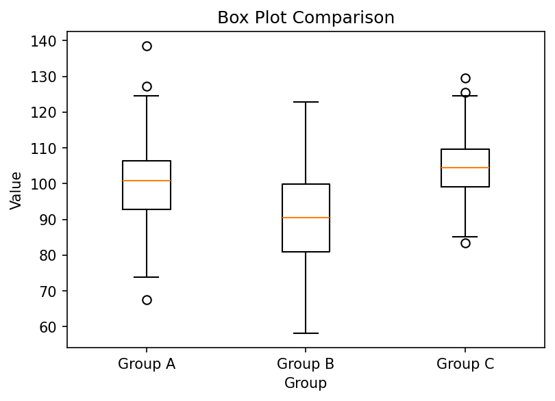
Expected output: box plot comparing multiple datasets
What you'll implement:
- Box plot shows median, quartiles, and whiskers
- Can display multiple datasets side-by-side
- X-axis labels identify each dataset
Hints:
- Use plt.boxplot() with a list of datasets
- Pass labels parameter for x-tick labels
depends on: bar, labels-titles
Practice this in the TUI: Library → All Katas → "matplotlib_box_plot"
Visualize a 2D matrix as a heatmap with color mapping.
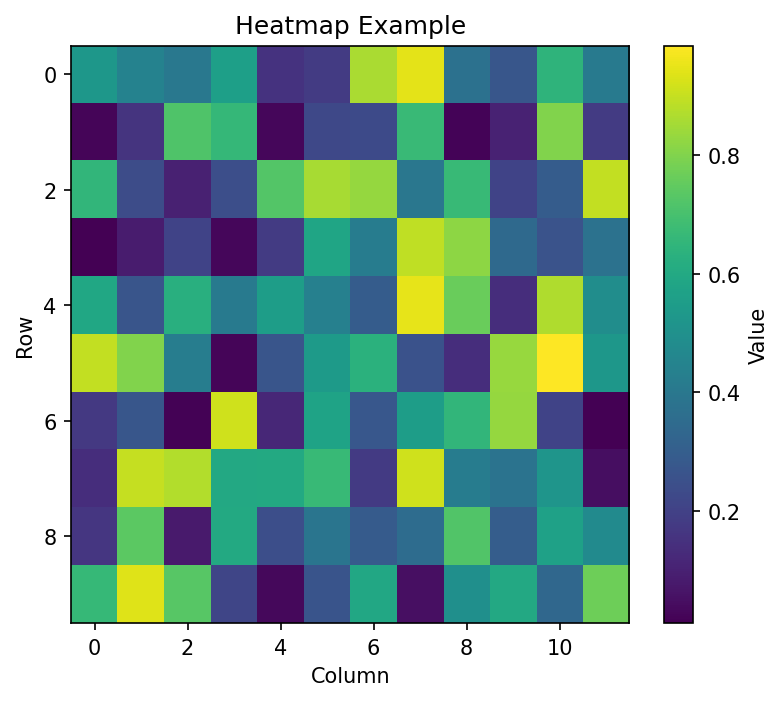
Expected output: heatmap with colorbar
What you'll implement:
- Matrix is displayed with color representing values
- Colorbar is shown indicating the scale
- Axes are properly labeled
Hints:
- Use plt.imshow() with a 2D array
- Add colorbar with plt.colorbar()
depends on: labels-titles
Practice this in the TUI: Library → All Katas → "matplotlib_heatmap"
Create contour lines for a 2D function or data grid.
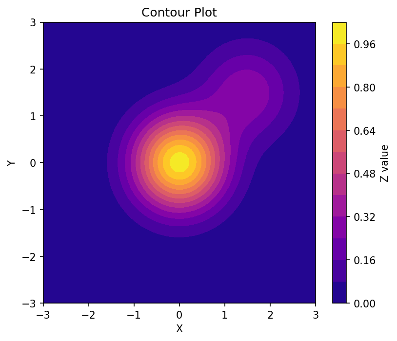
Expected output: filled contour plot with colorbar
What you'll implement:
- Contour lines are drawn at appropriate levels
- Can use filled contours (contourf) or line contours
- Colorbar shows value mapping
Hints:
- Use plt.contour() for line contours or plt.contourf() for filled
- Pass X, Y, and Z arrays (meshgrid for functions)
depends on: heatmap
Practice this in the TUI: Library → All Katas → "matplotlib_contour"
Create a figure with multiple subplots in a grid layout.
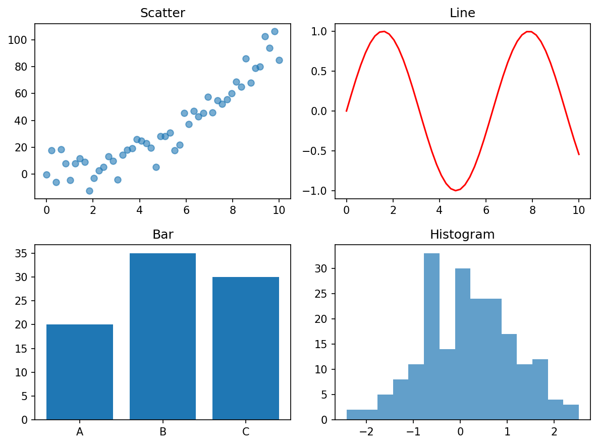
Expected output: 2x2 grid of different plot types
What you'll implement:
- Figure contains multiple independent plots
- Subplots are arranged in a grid (e.g., 2x2)
- Each subplot has its own axes and can be customized independently
Hints:
- Use plt.subplots(nrows, ncols) to create figure and axes
- Access each subplot via axes array: axes[i, j]
depends on: scatter, line, bar, histogram
Practice this in the TUI: Library → All Katas → "matplotlib_subplots"
Create a plot and save it to file in multiple formats.
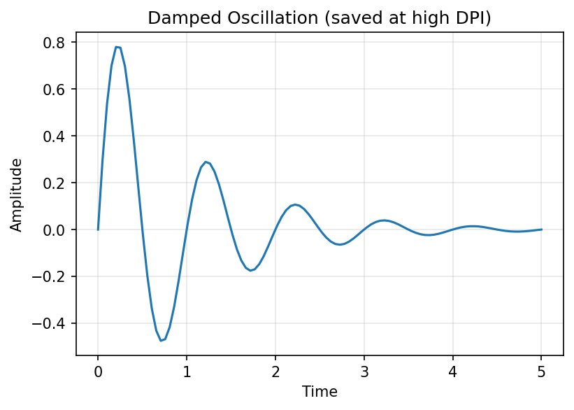
Expected output: plot saved to disk
What you'll implement:
- Figure is saved to disk (PNG, PDF, or SVG)
- File path and format are configurable
- DPI (resolution) can be specified for raster formats
Hints:
- Use plt.savefig(filename) before plt.show()
- Specify format with extension: 'plot.png', 'plot.pdf'
depends on: labels-titles
Practice this in the TUI: Library → All Katas → "matplotlib_save_figure"